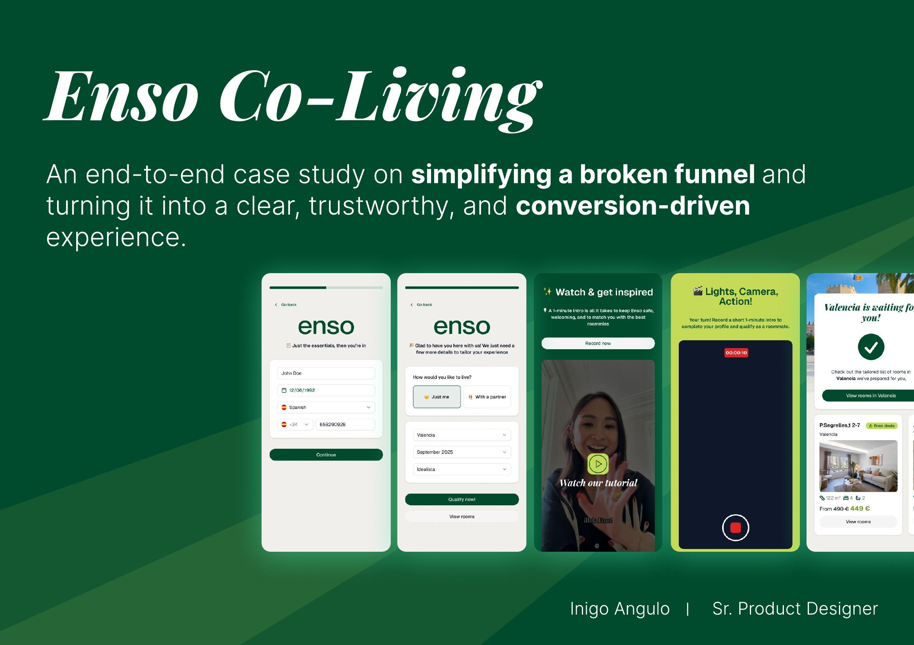
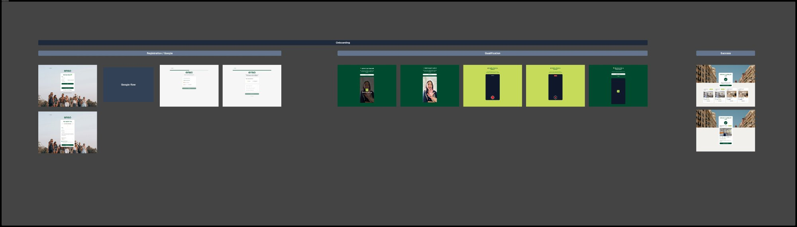
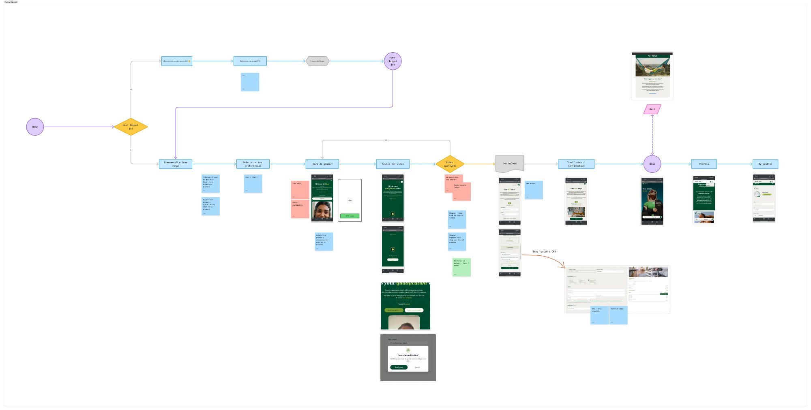
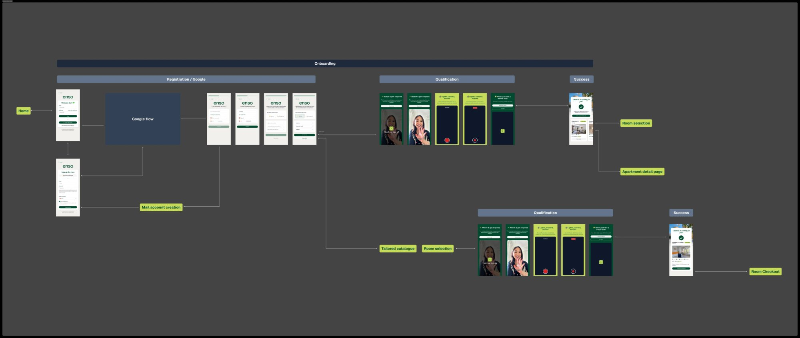
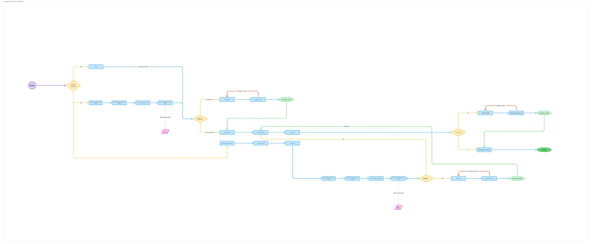
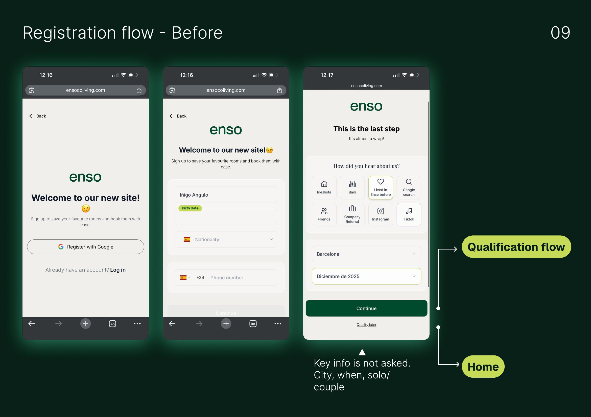
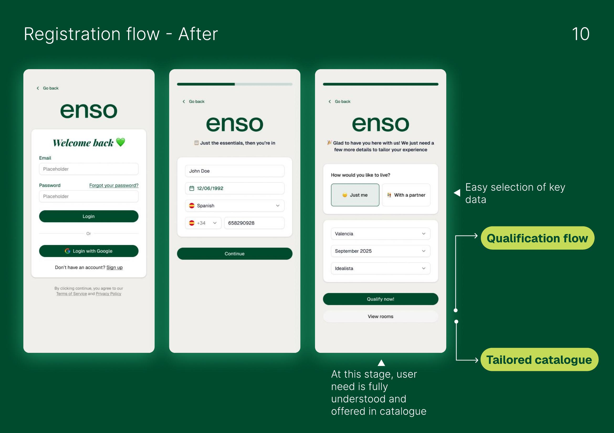
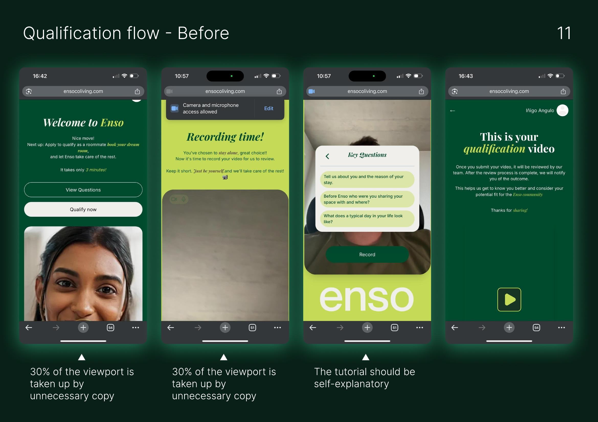
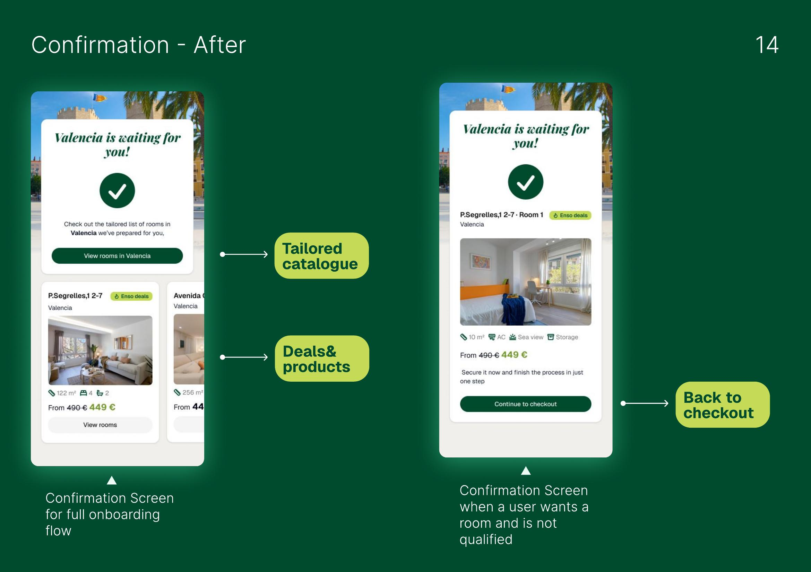

36% of users abandoned before they even started. The funnel wasn't just broken. It was invisible.
ENSO's onboarding funnel lost 176 out of 486 users before qualification. The brief said "make it digital." Research said "make 3 decisions faster, not 47 spreadsheets smarter." I redesigned the entire funnel from registration to checkout, cutting friction 22% and reducing early drop-offs from 36% to under 20%.


An international co-living startup with a broken front door
ENSO is an international startup offering co-living solutions across Europe, helping young professionals and digital nomads find and move into shared apartments. The company combines property management with a digital-first approach: simple, transparent, community-driven urban living.
The onboarding funnel was ENSO's most critical flow, but it was causing massive drop-offs. 486 users entered the funnel during the observation period. Only 310 made it to the pre-video qualification step. 176 users, over 36%, abandoned before even attempting to qualify.
The entire backend operation ran on 47 interconnected Google Sheets across 3 European markets. Data conflicts between operators, zero visibility for tenants, and 3+ hours of daily manual reconciliation. They planned to expand to 5 new cities. The infrastructure was already breaking.
My role: lead the end-to-end redesign of the onboarding funnel, from workshops and research to final delivery. AI & Experience Strategy Lead, working directly with leadership.
The funnel created frustration at every critical moment
The existing onboarding funnel introduced friction where it should have built confidence. Three specific failures stood out:
Registration captured the wrong data. Key information like city preference, move-in date, and solo/couple status wasn't asked during registration. Users had to re-enter context later, breaking flow and increasing cognitive load.
The qualification flow wasted 30% of the viewport on unnecessary copy. The video recording tutorial should have been self-explanatory, but screens were cluttered with instructions that added confusion instead of clarity.
The confirmation flow was a dead end. After document upload, a "Close" button took users to the home page with no clear confirmation, no trust signal, and no path to the next step. The KYC screen asked for critical information at the wrong moment.
Baseline funnel: 486 users observed. 176 dropped before qualification. Over 36% lost before the product could even demonstrate value.
Workshop with leadership + 2 weeks shadowing operators
I facilitated a workshop with ENSO's leadership team. Together we mapped the current funnel, identified pain points, and aligned on business needs. Three guiding questions structured the session: What do we currently have? What do we need? What do we want to offer?

Then I spent 2 weeks shadowing operators across all 3 markets. The key finding changed the entire product direction:
A critical data point emerged: 66% of ENSO users accessed the platform on mobile. The existing flow was designed desktop-first. Prioritizing mobile-first was non-negotiable for conversion.
Three goals, no negotiation
1. Streamline the journey. Reduce the number of steps and remove redundant actions. Every screen that doesn't move the user toward qualification is a screen that loses them.
2. Capture key data early. Collect essential user information (city, move-in date, solo/couple) at registration, not later. This enables efficient classification, personalization, and a tailored catalogue from the first interaction.
3. Optimize for conversion. Redesign CTAs, form design, and flow logic. Reduce drop-offs from 36% to under 20%. Target: +20% uplift in qualified users reaching checkout.
Complete funnel redesign: 6 stages, mobile-first, every screen justified
The new funnel structure was designed from scratch based on workshop findings, operator shadowing, and baseline data analysis:
1. Registration: Google/Email sign-up with key data captured upfront (city, date, solo/couple). Previously this data was asked too late or not at all.
2. Onboarding: Clear expectations + progress indicators. User knows exactly what's coming and how many steps remain.
3. Qualification: Essential info only, concise copy. Video recording flow redesigned with known interaction patterns (record button, timer, review). Removed 30% of unnecessary viewport copy.
4. Document Upload: Moved from qualification step to checkout. Reduced early friction by deferring non-critical data collection.
5. Success Screen: Immediate feedback + trust signals. "Valencia is waiting for you!" with tailored room listings. No more dead-end "Close" buttons.
6. Checkout: Tailored listings based on registration data. User sees rooms matching their city, date, and living preference. Simplified booking action.


Side-by-side: what changed and why
Registration flow
- Key info not asked (city, when, solo/couple)
- User dumped to generic "last step" screen
- Attribution question buried in registration
- No clear path to qualification flow
- City, date, solo/couple captured at registration
- "Just the essentials, then you're in" framing
- Easy selection with clear data hierarchy
- Direct path: qualify now or view rooms


Qualification flow (video recording)
- 30% viewport wasted on unnecessary copy
- Tutorial not self-explanatory
- Key questions shown as overlay popup
- No clear progress or time indication
- Clean screen with just the basics
- Reuse of known interaction patterns (TikTok-like)
- "Watch and get inspired" tutorial video
- Timer, record button, review: 3 steps, no confusion

Confirmation flow
- KYC info asked at wrong moment
- No clear confirmation after document upload
- "Close" button goes to home page (dead end)
- No connection to catalogue or next step
- "Valencia is waiting for you!" with trust signals
- Tailored room catalogue shown immediately
- Two paths: browse catalogue or continue to checkout
- Unqualified users see room + "Continue to checkout" CTA

When "smart" onboarding made users feel surveilled
The original AI-enhanced onboarding tried to predict user preferences before they'd expressed any. Pre-filled 12 fields based on behavioral signals. Our hypothesis: less effort = higher completion.
Wrong. Users with pre-filled forms had a 15% higher abandonment rate. User interviews revealed why: "How does it know that about me?" Pre-filling created distrust, not delight.
The fix: reduce AI to exactly 2 moments:
First: recommend a community match after the user self-describes (AI as assistant, not oracle). Second: pre-fill only data explicitly given in a previous step (AI as memory, not prediction).
Result: -22% total onboarding friction. The insight: AI should augment expressed intent, not predict unexpressed intent. There's a trust threshold that gets violated when AI knows too much too early.
Trade-offs and what I chose to remove
| Area | Decision | Trade-off |
|---|---|---|
| Scope | 3 decision tools instead of 47-feature platform | Operators initially felt it was "too simple." Needed change management. But adoption was 4x projected. |
| Data | Capture city, date, solo/couple at registration | Longer registration form. But enables personalized catalogue immediately, removing 2 later friction points. |
| AI | AI at 2 touchpoints instead of everywhere | Less impressive demo. But users trusted it. Trust beats wow factor. |
| Mobile | Mobile-first for all flows (66% of users) | Desktop experience deprioritized. MVP was desktop, but all new flows designed mobile-first then adapted. |
| KYC | Moved document upload to checkout | Deferred critical verification. But removed friction from the highest-drop-off zone. KYC happens when intent is highest. |
| Design | Cross-market design system from day 1 | Slower initial velocity. But each new market launches in weeks instead of months. 48 components, 3 themes, 1 token architecture. |
Three experiments that went wrong
What actually happened
Launched across 3 European markets. Operator daily reconciliation time dropped from 3+ hours to approximately 20 minutes. The design system enabled 2 additional markets to be onboarded in weeks instead of months.
The biggest win was the scope reduction. "Digitize 47 spreadsheets" became "accelerate 3 daily decisions." Shipped 2 months ahead of schedule with a product operators actually recognized as their workflow.
What's unresolved: Community matching accuracy. The AI recommendation works, but whether AI-matched tenants have better long-term retention than manually matched ones is a 12-month metric still tracking.